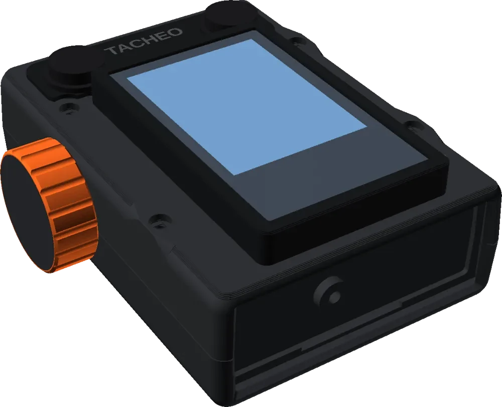
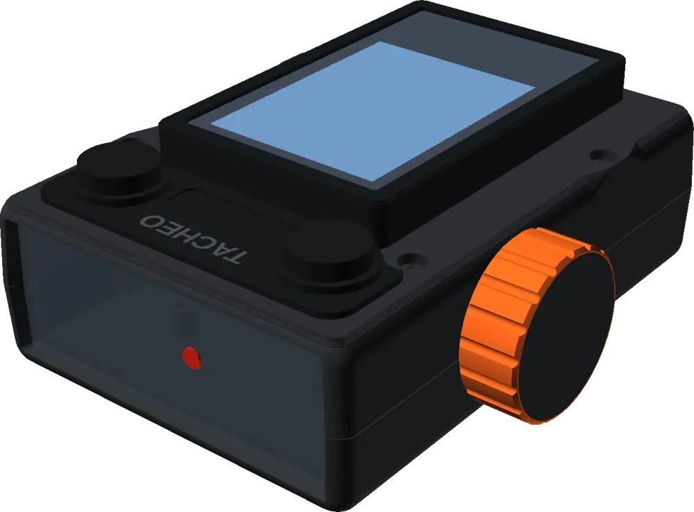

Cave survey, from the station to the finished map
Tacheo
An instrument that checks its own work, and free software to make the map.
The Tacheo takes laser, compass and clino shots and checks every Frontsight against its Backsight. Tacheo Topside looks after the instrument, CartoTable turns the survey into a map, and the phone app takes your caves underground. Topside, CartoTable and the phone app are free and work without a Tacheo.

What's here
The instrument and the software.

Tacheo
The cave survey instrument: laser, compass and clino in one sealed handheld with a colour screen. CrossTalk pairs two units so each station is checked before you leave it.
The instrument and its specifications →
Topside
The companion program for Windows and Mac: one-click firmware updates, shots downloaded by survey day, a health check for each unit. It reads DistoX2, Cavway X1 and BRIC too.
What Topside does →
CartoTable
Survey data to the finished map, inside Topside: finds the blunders in Walls, Compass, Survex or Therion data, reads book pages, lays sketches on the survey and puts the cave on lidar.
What CartoTable does →Go straight to